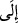
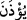
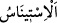
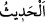

Rivâyet etmişlerdir ki, Hz. Peygamber (a.s) Hak Teâlâ’nın hükmü ile Hz. Zeyneb’i
kabul edince düğün yemeği ikram etti. Halkı çağırıp büyük bir ziyafet verdi. Yemek
yenince halk sohbete daldılar. Hz. Zeyneb ise evin köşesinde yüzünü duvara çevirmiş
oturuyordu. Hz. Peygamber (s.a.) insanların dağılıp gitmesini istiyordu. Sonunda kendisi
meclisten kalktı ve gitti. Sahâbe de gittiler. Sadece üç kişi kaldı, onlar sohbete devam
ediyorlardı. Hz. Peygamber (a.s.) evin kapısına geldi, onlardan müsâade istemeye de
utanıyordu. Çok zaman bekledikten sonra yalnız kaldı ve hicâb âyeti nâzil oldu.
Yine rivâyete göre mü’minlerden bazıları Hz. Peygamber (s.a.)’in yemek vaktini
bekliyorlar, eve girip Hz. Peygamber (s.a.) gelinceye kadar orada oturuyorlar, sonra
yemeği yiyorlar ve dışarı çıkmıyorlardı. Rasûlullah (s.a.) ise bu durumdan rahatsız
oluyordu. İşte Allah Teâlâ bunun üzerine şöyle buyurdu:
“Ey îman edenler! Siz,” size izin verilip “bir yemeğe çağırılmadıkça, zamanını
gözetmeksizin,”
yemek
vaktini
veya
yemeğin
hazırlanmasını
beklemeden,
“Peygamber’in evlerine” odalarına hiçbir durumda “girmeyin.”
Buradaki “__WORD__” harf-i cerri “__WORD__ fiiline müteallık olup izin verilse bile dâvetsiz
yemeğe gitmenin güzel bir şey olmadığını hissettirmek için “çağrılıp dâvet
edilmedikçe” mânâsını içermektedir.
Burada izin isteme, vakti gözetme ve hürmet göstermenin gerekliliğine işâret vardır.
“Ancak dâvet edildiğiniz vakit girin.” Burada ‘yemeğe izin’ ile yemeğe dâvetin
kastedildiğine açıkça delâlet vardır. Yâni içeri girmek için size izin verildiğinde ve
yemeğe dâvet edildiğinizde edeb üzere ve o makamın hükümlerini muhâfaza ederek
O’nun evlerine girin.
“Yemeği yediğinizde hemen dağılın,” beklemeyin “sohbete dalmayın.”
“__WORD__ (dalmak)” ünsiyet etmek, alışmak demektir. Yalnızlığın ve ürküp kaçmanın
zıddıdır. “__WORD__ (sohbet)” kelimesi, az söz için de çok söz için de kullanılır. Çünkü söz,
peyderpey hâdis olur/söylenir.
Yani, bazınız bazınızın söz ve sohbetine ya da kulak misafiri olarak ev halkının söz ve
sohbetine ünsiyet edip dalmak talebiyle Hz. Peygamber (s.a.)’in evlerine girmeyin.
Bu ifade izinsiz ve dâvetsiz olarak yemek için girenlere ve benzerlerine mahsustur.
Yoksa hiç kimseye yemek dışında izinle bile Hz. Peygamber (s.a.)’in evine girmek,
yemekten sonra da çok önemli bir iş için bile olsa orada beklemek câiz olmazdı.
et-Te’vîlâtü’n-Necmiyye’de şöyle denilmiştir: “Yâni ihtiyaçlarınız görülünce artık
oradan çıkın. İhmalkar davranmayın. Hz. Peygamber (s.a.)’in güzel ahlâkı sizi güzel
edebden alı koymasın. O’nun hayâsının fazlalığı sizi kendisine sıkıntı vermeye sevk
etmesin. Hz. Peygamber (s.a.)’in güzel ahlakı, onları kendisiyle serbest ve rahat
davranmaya cesaretlendirmişti. Nihâyet Allah bu âyeti indirdi.”
“Çünkü bu hareketiniz” yemekten sonra bekleyip sohbete dalmanız, evi kendisine ve
âilesine dar geldiğinden ve gereksiz yere O’nun meşgul edilmesinden dolayı